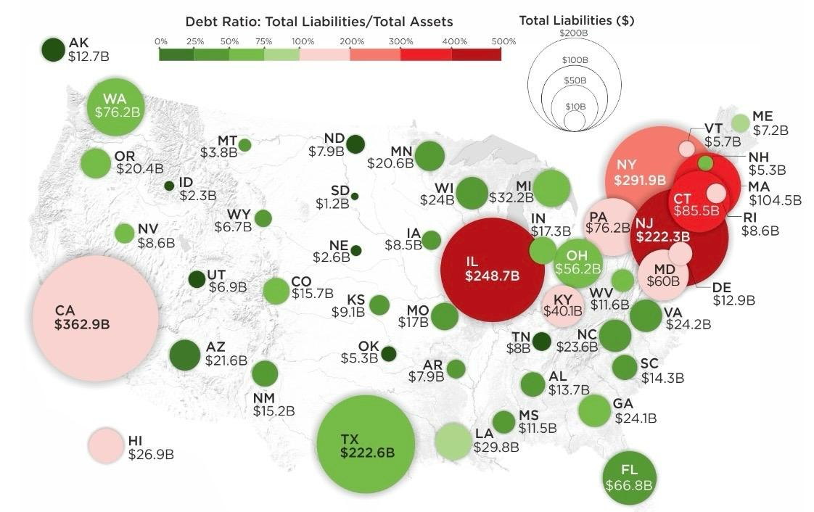

Redesign 1
Bad Graph 1
Dept Ratio: Total Liabilities/Total Assets

This map compares states’ debt ratios-total liabilities divided by total assets-along with the dollar amount of those liabilities.
Size of the bubble: This indicates the size of the total liability such that the larger the bubble, the larger the liability.
Color Gradient: Green represents low debt ratios, red represents high debt ratios, and neutral colors represent middle levels.
Red represents the states with a high debt ratio: For example, Illinois and New Jersey are very high, while Texas and Florida are rather low.
Why is this a bad graph :
Double Encoding Confusion: Size and color are two different measurements, and it’s hard to focus on both.
Overlapping Bubbles: States-especially for densely populated areas like the Northeast-overlap and are hard to read.
No Clear Scale: Color gradient does not have numeric scale helping to explain debt ratio numbers.
Map distortion: Extremely large states like Texas and California dominate this map, based not on their economic condition but based on their size alone.
Misleading visuals: States that have high liabilities but low relative debt ratios - Texas is a good example of this, might appear worse than smaller states that have much higher debt ratios.
Geographical Irrelevance: For all practical purposes, this map says little, and the same comparison is better made via a bar chart or a dot plot.
Revised Chart - 1
Total Liabilities by State: Bar Chart
Why is this a good chart?
Clear Visualization: The bar chart allows comparison in which states have more liabilities compared to the rest.
Direct Comparison: X-axis has states listed on it and y-axis has liabilities, so comparison is done very quick visually
Logical Scaling: y-axis is labeled in billions, so you get an idea of an exact value.
Clean design: It doesn’t have anything superfluous, and in this graph, viewers can directly focus on the data.
Read easily: Since it is a linear arrangement, one can easily spot states with high liabilities, like California and Texas.
Graph Insights
Based on the “Total Liabilities by State” bar chart, we can conclude:
Large disparities: Some states have far larger liabilities than others.
Top three states: California (CA), Illinois (IL), and New York (NY) have the biggest liabilities, as indicated by the tall bars.
Low-Liability States: Wyoming (WY), Vermont (VT), and South Dakota (SD) have very low liabilities, shown by their short bars.
Easy Comparison: The chart clearly illustrates which states have the highest and lowest obligations.
Concentration: The majority of liabilities are concentrated in a few states, with the others having modest or low levels.
This graph allows you to simply compare state liabilities and discover those with the most financial responsibilities.
Revised Chart- 2
Total Liabilities by U.S. State Geospatial Map
Why is this a good chart?
Geographical Context: You can compare state liabilities with one other while still seeing geographical context.
Color Gradient: Darker blue represents more liabilities, lighter blue, less. You get an idea from a glance which states owe more than others.
Clear Legend: The chart conveys liability ranges, which prohibits one from misjudging the data.
Clean Design: It’s just a map without irrelevant details, making it look cluttered; it is all about data.
In an Instant: You get quick insights through color-coding-for instance, knowing which states are high-reliability by the darker blue without reading the numbers.
Graph Insights
Based on this “Total Liabilities by U.S. State” map we may draw the following conclusions:
Regional Differences: Each state is in a different shade because each state displays a different level of liabilities, in a range of blues.
High-Liability States: The states of Michigan (MI) and California (CA) display the highest liabilities shown in dark blue.
Low-Liability States: Lighter blue states - often in the Midwest and West - have lower liabilities.
Easy to Compare: Due to a color gradient, liabilities of different states are easily compared to one another.
This map clearly depicts those states with financial liabilities that are either the highest or the lowest.